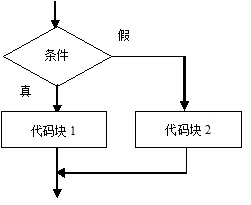

原文出处:本文由博客园博主村雨1943提供。
原文连接:https://www.cnblogs.com/cunyu1943/p/11605029.html
原文连接:https://www.cnblogs.com/cunyu1943/p/11605029.html
- JVM(Java Virtual Machine)：源文件->编译器->字节码文件->解释器->程序；
- JDK:Java Development Kit，Java开发工具包；
- JRE:Java Runtime Environment，Java运行时环境；
Java是一种强类型语言，即它所存储的数据都是有类型的，且必须在编译时就确定其类型；
数据类型：
- 基本数据类型;
- 数值型：
- 整数类型：byte，short，int，long；
- 浮点型：float，double；
- 字符型：char；
- 布尔型：boolean；
- 数值型：
- 引用数据类型：
- 类；
- 接口；
- 数组；
- 基本数据类型;
变量使用规则：
- 先声明再使用；
- 可以在声明的同时进行初始化；
- 变量中每次只能赋一个值，但可以修改多次；
- 变量名使用中文无语法错误，但不建议使用；
自动类型转换需满足的条件
- 目标类型能与源类型兼容；
- 目标类型大于源类型；
常量
- 设定后在程序运行过程中不允许改变；
- 语法：final 数据类型 变量名 = 值；
注释
- 单行注释：//
- 多行注释：/* */
- 文档注释：/** */
运算符
- 算数运算符；
- 赋值运算符；
- 比较运算符；
- 逻辑运算符；
- 条件运算符：语法形式：布尔表达式？表达式1：表达式2；
运算符优先级

if...else
- 单重if

- 多重if

- 嵌套if
条件之switch
- switch后小括号中表达式的值必须是整形或字符型；
- case后的值可以是常量数值，也可以是常量表达式；
- case匹配后，执行匹配快中程序代码，若未遇到break会继续执行下一个的case块的内容，直到遇到break或switch语句块结束；
循环
- while：特点是先判断，后执行；
- do...while：特点是先执行，后判断，保证循环至少被执行一次；
- for：语法：for(循环变量初始化；循环条件；循环变量变化){
循环条件；
} - do...while循环结束的条件是while后的条件成立；
- break：作用是终止整个循环体的执行；
continue：跳过循环体中剩余的语句并进行下一次循环；
欢迎关注微信公众号：村雨1943；创作不易，未经同意，转载请注明出处~